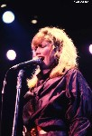
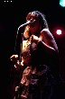
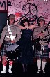
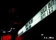
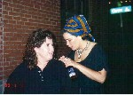

Toni In Concert -- Picture
Gallery !
Toni In Concert -- Picture
Gallery !
Photos provided
by and copyright of, Don Adkins and Raelene Mitchell ! Click to email Don !
Click to email Raelene !
The images that follow trace 20 years of Toni Childs. They give
a rare glimpse into the early years of Toni. The artist that
we know of today with her blend of progressive rock with world music
influences got her start in the late 70s LA music scene. She briefly
was the lead singer for Berlin following the first departure of lead
singer Teri Nunn, a little known fact. The group recorded one song
together in the studio Matter Of Time, very powerful with Tonis lead
vocals. This version of Berlin was short-lived and Matter Of Time was
later rerecorded and released as part of the very first Berlin album
with subsequent lead singer Virginia Macolino. The album was released in
Germany and is a rare collectors item in the US. After this first album
Teri Nunn again rejoined Berlin, who then went on the subsequent
commercial success.
Around 1980 Toni entered the LA club scene with her hard rocking
Toni & The Movers. These pictures show various stages of this
critically acclaimed group. You can also see the much more rock oriented
look of Toni. Even in these early days Toni experimented with a variety
of sounds and influences. One popular live song Africa started laying
the foundation of world music influences that would follow in the
ensuing years. Toni recorded a handful of songs in the studio but her
progressive sound was too early for the time period. One frequent quote
was that she had the best band in LA that couldnt get signed.
Unfortunately the hair bands of LA were the center of attention. Toni
disbanded the Movers following 2 farewell shows at the popular Madame
Wongs club in LAs Chinatown. Toni had been a popular act at both Madame
Wongs locations along with other groups like the Motels and
Oingo-Boingo. the final performance even featured Saturday Night Live
comedian Lorraine Newman singing alongside Toni for the encore.
Following the Movers Toni formed an experimental eclectic group
entitled Nadia Kapeesh which enjoyed a brief stint of club touring.
Frustrated by the current state of music in LA Toni moved to England,
saw the world and synthesized her experiences into the familiar Toni
Childs sound that became so well known with her breakthrough album
Union.
(A big thanks to Don Adkins for the Intro and pix!)
 |
 |
|
 |
 |
 |
 |
 |
 |
 |
 |
 |
 |
 |


|
Here are some pictures of Toni Childs that were taken in Dallas, Texas outside the
"Deep Ellum Live" club on Tuesday, June 28, 1994, after the opening (1st) night
concert of Toni's The Woman's Boat tour. Toni put on a wonderful show for a
nearly-packed house. She drew a very diverse, enthusiastic crowd.
Toni was nice enough to pose for a picture and graciously chatted with me. She was thrilled
to see my company newsletter of May 1989, which featured pictures of the company's
"Tropical Getaway" picnic/talent show where I dressed in Toni's Caribbean/African look &
performed the song, "Hush." Her name appeared in the newsletter, and she autographed it,
as well a collage poster which featured photos from her 3 albums.
Regards, Martha Aya
P.S. I've been a loyal Toni Childs fan since 1988, and I sure do miss her.
 |
 |
 |
|
 |
 |
 |
{kind=link}
{kind=link}
{kind=link}
{kind=link}
{kind=link}
{kind=link}
{kind=link}